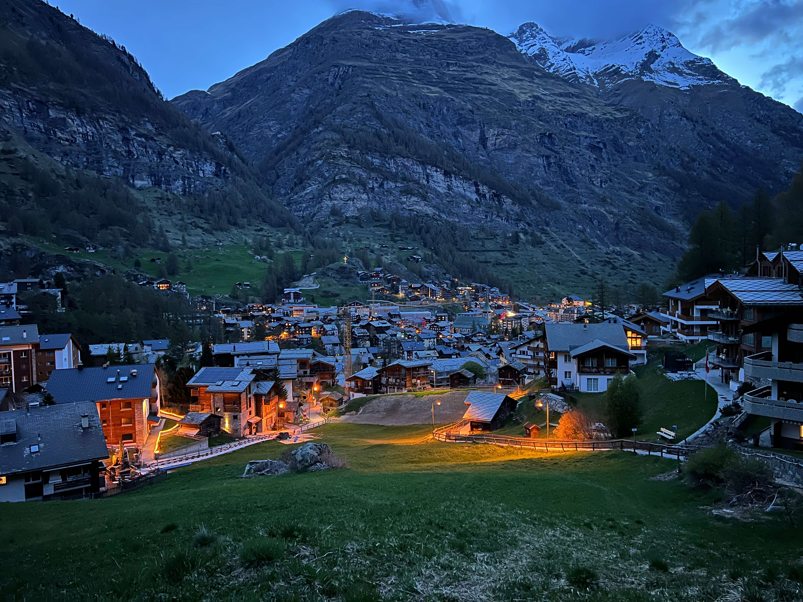
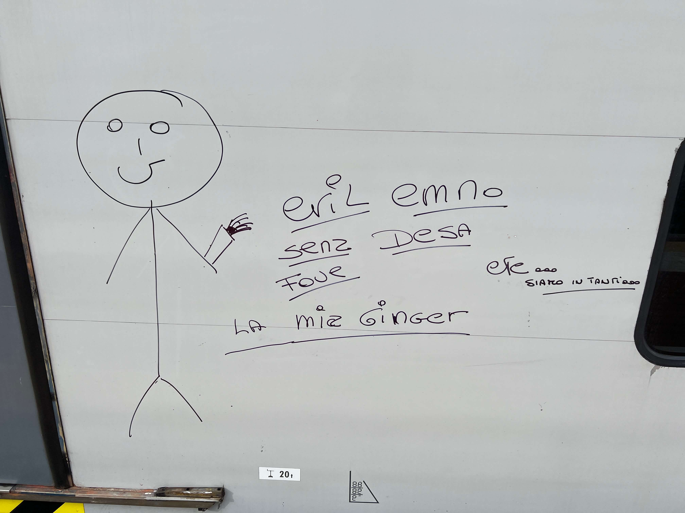

Yerp Trip
Now that I have been out of school for ONE year, the middle of May seems like a random time to take a vacation. I guess there would never be a window that felt "just right", because work and life move along without you, so you might as well just plan something :) without a whole lot of ruminating. the itenerary was: 1 night in Zurich, 2 in Zermatt, 2 in Milan, 1 in Florence, 2 in Venice, 1 in Istanbul, and 1 in Boston (a few ppl went to Amsterdam before we all met in Zurich). The trip felt very long. in a good way. Most days were very full, and the days tend to blend together in my memory of trips like this. but each day I tried to write a few things down so I could have a more solid record of the order of things.

In Zurich, we ate at a restaurant which was allegedly an armory when the place was built in the 1400s and went to see a waterfall. I learned that you don't need to tip servers in Europe. We climbed up a triangular tower and watched the sunset over some seriously super scenery !!
We sat next to a couple speaking German on one train ride and the woman kept affirming with "yo.. yoyo.. " and we kind of fixated on this for the rest of the trip
The next day, I ate a Danish Plunder and we took a train to Lauterbrunnen, where a man charged us 30 franks (written 30 CHF, which by contrast prompted me to realize the symbolic weight of the dollar sign $ next to a number which makes it feel like an amount of money whereas the number-acronym did not register any value, No I will not expound upon this at this time) to store our luggage at his hotel for a while. I bought coffee at an espresso bar fashioned onto a bicycle. we shared a cheese fondue and Everett played piano for us,and then we continued to Zermatt.

Reece and I went for a short morning run in the chilly ski town of Zermatt and the hills were devastating. Luckily, there was a McDonald's where you could order a 5 Shrimps

We hiked for a while and saw the stereotype illustrated of sheep and goats with bells on their necks frolicking through the green hillsides scattered with boulders and wooden shacks. A man with an axe walked up to Ilsa and then we kept hiking.

After dinner we found a nice view of town and talked about relationships, etc and eventually drifted off listening to the Pied Pipers and other oldies from this playlist
Next was Milan, where we got off the train and immediately found an incredible pizza restaurant. the marinara I ordered was little more than sauce and bread but was easily the best pizza I have ever had. We walked through a big castle with a moat and some cats in the moat and toured the Duomo Di Milano, definitely one of the churches of Italy.
We got dinner, a little too much wine, and while walking down the street with gelato someone tried to steal Malik's chain. then he asked Malik for a cigarette, and then he tried to steal Malik's chain (again). we were that close to a serious altercation but just.. somehow avoided it? like, did that really happen?
The next morning we met Evil Emno on the train to Canzo, where I would nearly meet my bitter end on the side of a mountain.
The ascent was really beautiful, probably my favorite hike of the trip and one of the best views I have attained
Pictured is our guide Giulio with Everett, Jarrett, and Reece, in front of Lake Como. Giulio explained how to do via ferrata in broken English between intermittent digressions into geology, botany, rehearsing our names (Everest, Janet, Elsa, Reeche), and stories from his day job doing helicopter rescue. We were like, yeah, we can probably do this climb no problem, sounds fun
The via ferrata was genuinely one of the hardest things I have ever done. When I say that I was severely, hopelessly terrified I mean that as a mortal animal my conscious experience narrowed in bleak realization that my life was nearing an abrupt end. I don't climb much and therefore lack the upper body strength to hold myself against the wall for extended periods of time. additionally I had a hard time "trusting the gear" i.e. clinging for dear life to a chain bolted into sheer limestone with Janet inches behind me coolly indicating that I needed to move faster. When I say that I was F.R.I.G.H.T.E.N.E.D. I mean that i was Frantically Realizing I'm Going Higher Than Expected, Nearing Early Demise
FRIGHTENED!
honestly precarious
but we made it
Florence is my favorite place we visited; it felt the most authentic and happened to provide several serendipities that made it a especially magical: 1) our first restaurant choice, a recommendation from one of Everett's friends, had a 2.5 hour wait when we showed up but we were seated immediately as a party of six was just on the way out; 2) in a cafe, we overheard a woman ask the barista out to a jazz club that night, so we looked it up and went to the jazz club called "Jazz Club", where we were charged $10 for a Jazz Club membership plus a drink; 3) our hostel shared a wall with an opera house, and we heard a rehearsal and performance which of course no one asked for but was very.. Italy. (For various reasons, I did not stay with the group that night, but still caught a bit of the opera singing which rang through the 20-bed hostel room.)
Nameless cafes seemed to appear on almost every street, serving espresso, cappucino, fresh orange juice, breads, pastries, liquor, and cigarettes
All of the cities we saw had a significant tourist population, many of which clearly being American, but Venice was truly an outlier in over-the-top pandering to westerners. I did get this nice photo though:

We stayed here for two nights, and after the second I went for a strange run through random suburbs. it was the worst of my international runs for aesthetic reasons, having run into several dead ends, unwalkable areas, and an industrial plant where security guards yelled at me in Italian.
Istanbul was the most alien place we visited, and we only went there because Everett found a flight with an overnight layover and could hook us up with a really nice hotel -
the taxis in downtown were a little Crazy. lots of winding roads and near misses with infrastructure and pedestrians

And after going out to a very swag rooftop bar, we returned at around 2am and decided we needed to hit the gym. (we couldn't take any of the amenities for granted), so after a solid lift we sat in the sauna for 20 minutes and took a cold shower
I have to mention two big problems from the trip: Everett's Grand Gesture of Statistics (E.G.G.S) and Reece's Impediment Concerning Exchanges (R.I.C.E.)
The EGGS problem is posed: 100 people are issued a slip of paper with a unique number between 1 and 100. The slips are then shuffled and placed randomly into numbered boxes from 1-100. Each person is then allowed to open up to 50 boxes in search of their original numbered slip, the goal being for all individuals to find their number. If no information is passed between participants, what is the optimal strategy each person should follow?
Consider no strategy, where each person tries 50 random boxes. that gives them a 50% chance of finding their number. with all trials being independent, the chance that everyone finds their number is (0.5)^100, or one in 1,267,650,600,228,229,401,496,703,205,376. I'll leave it to wikipedia to explain the solution to the 100 Prisoners Problem, where they explain a strategy that gives a nearly 1 in 3 chance of success.
The RICE problem is posed: given a 5 gallon bucket and a 3 gallon bucket, how can one obtain 4 gallons of fluid in the 5 gallon bucket?
Real photo of me thinking about jugs on the train
This problem is easier, but it's interesting to think about how it could be generalized. The 3-bucket and 5-bucket are sort of like basis vectors of a strange vector space which is discretized such that you can't scale anything and the addition operation has special rules (if the 3-bucket has 3 gallons, you can't add to it; if the 5-bucket has 3 gallons, you can: 33 + 1 = 33 and 35 + 1 = 45 (but you can't just add 1 from the tap, because you can't directly measure that. So the addition operation can either pour one bucket into another or fill all remaining space in a bucket from the tap))
Probably best to represent the setup with a graph and define what kinds of functions can take you between the nodes. anyway, the Europe Trip was really great, special thanks to Everett for planning it and to Malik and Ilsa for taking cool film photos